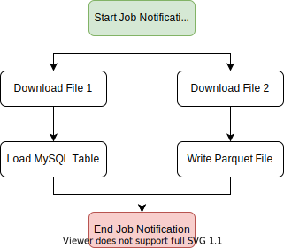

Traditionally, batch processes/applications are commonly built as top-down scripts.
It is not uncommon to see even long-running batch processes implemented as long top-down Shell/Python scripts or a series of individual scripts to be executed in specific order.
In the event of a failure, processes may need to be resumed/restarted from the specific point of failure, rather than from the start. To do this, state management must either be implemented or a larger orchestration tool may be used.
Sample Python Script
Let's take a very simple (and very much contrived) example:
import urllib.request
import pandas as pd
from datetime import datetime
def emit_slack_message(message):
# Assume implementation
# ...
def load_to_mysql(df):
# Assume implementation
# ...
def write_as_parquet(df, path):
# Assume implementation
# ...
# Broadcast job start notification
print('Starting example batch process')
run_date_str = datetime.now().strftime('%Y-%m-%d')
emit_slack_message('Starting daily data download for {}'.format(run_date_str))
# Download data file 1
print('Initiating File Download 1')
url1 = 'https://some_file_url_here_1'
urllib.request.urlretrieve(url1, '/landing/data1.csv')
# Download data file 2
print('Initiating File Download 2')
url2 = 'https://some_file_url_here_2'
urllib.request.urlretrieve(url2, '/landing/data2.csv')
# Load file 1 to MYSQL
print('Loading MYSQL table')
df1 = pd.read_csv('/landing/data1.csv')
load_to_mysql(df1)
# Write combined file as parquet
print('Writing Parquet file')
df2 = pd.read_csv('/landing/data2.csv')
write_as_parquet(df2, '/data/extract_{}.parquet'.format(run_date_str))
# Broadcast job end notification
print('Completed example batch process')
emit_slack_message('Successfully completed daily data download for {}'.format(run_date_str))
As with any script, all steps execute in serial fashion and upon failure, a restart will run all steps again.
Worker Classes
We can instead convert this into a PyRunner application with minor changes by separating each logical step into Worker classes:
# <app_root_dir>/python/workers.py
import urllib.request
import pandas as pd
from datetime import datetime
from pyrunner import Worker
def emit_slack_message(message):
# Assume implementation
# ...
def load_to_mysql(df):
# Assume implementation
# ...
def write_as_parquet(df, path):
# Assume implementation
# ...
# Broadcast job start notification
class Start(Worker):
def run(self):
# Print function also works, but we can take advantage of
# advanced features with the provided logger.
self.logger.info('Starting example batch process')
run_date_str = datetime.now().strftime('%Y-%m-%d')
emit_slack_message('Starting daily data download for {}'.format(run_date_str))
# The self.context is a special thread-safe shared dictionary,
# which can be read or modified from any Worker.
self.context['run_date_str'] = run_date_str
# Download data file 1
class DownloadFile1(Worker):
def run(self):
self.logger.info('Initiating File Download 1')
url = 'https://some_file_url_here_1'
urllib.request.urlretrieve(url, '/landing/data1.csv')
# Download data file 2
class DownloadFile2(Worker):
def run(self):
self.logger.info('Initiating File Download 2')
url = 'https://some_file_url_here_2'
urllib.request.urlretrieve(url, '/landing/data2.csv')
# Load file 1 to MYSQL
class LoadMySQL(Worker):
def run(self):
self.logger.info('Loading MySQL table')
df = pd.read_csv('/landing/data1.csv')
load_to_mysql(df)
# Write file 2 as parquet
class WriteParquet(Worker):
def run(self):
self.logger.info('Writing Parquet file')
# Once again, we are accessing the shared dictionary, this time
# to read the value originally set by the Start Worker.
run_date_str = self.context['run_date_str']
df = pd.read_csv('/landing/data2.csv')
write_as_parquet(df, '/data/extract_{}.parquet'.format(run_date_str))
# Broadcast job end notification
class End(Worker):
def run(self):
self.logger.info('Completed example batch process')
run_date_str = self.context['run_date_str']
emit_slack_message('Successfully completed daily data download for {}'.format(run_date_str))
Task List File
To specify the order of execution of Workers above, we need to express in a .lst (to be placed in <app_root_dir>/config/my_sample_app.lst) file like:
#PYTHON
#ID|PARENT_IDS|MAX_ATTEMPTS|RETRY_WAIT_TIME|PROCESS_NAME |MODULE_NAME|WORKER_NAME |ARGUMENTS|LOGFILE
1 |-1 |1 |0 |Start Job Notification|workers |Start | |$ENV{APP_LOG_DIR}/start.log
2 |1 |1 |0 |Download File 1 |workers |DownloadFile1| |$ENV{APP_LOG_DIR}/download_1.log
3 |1 |1 |0 |Download File 2 |workers |DownloadFile2| |$ENV{APP_LOG_DIR}/download_2.log
4 |2 |1 |0 |Load MySQL Table |workers |LoadMySQL | |$ENV{APP_LOG_DIR}/load_mysql.log
5 |3 |1 |0 |Write Parquet File |workers |WriteParquet | |$ENV{APP_LOG_DIR}/write_parquet.log
6 |4,5 |1 |0 |End Job Notification |workers |End | |$ENV{APP_LOG_DIR}/end.log
A visualization of the above .lst file:

With the above two pieces, we now have the necessary code to run the original script as a PyRunner application.